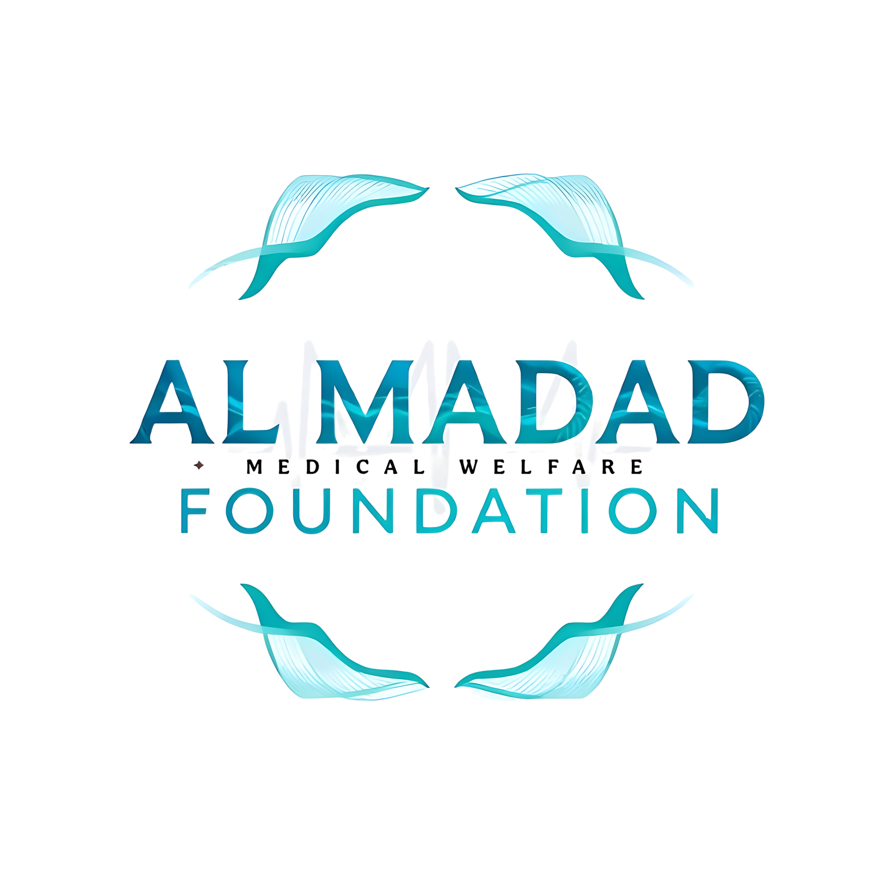

Your browser does not support the video tag.
وَإِذَا مَرِضْتُ فَهُوَ يَشْفِينِ
"And when I am ill, it is He who cures me."
(Surah Ash-Shu'ara 26:80)
اور جب میں بیمار پڑتا ہوں تو وہی مجھے شفا دیتا ہے۔